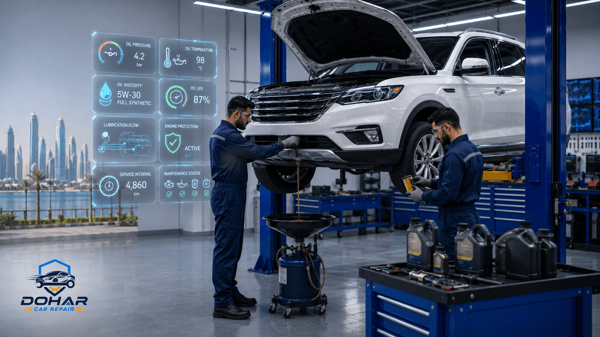
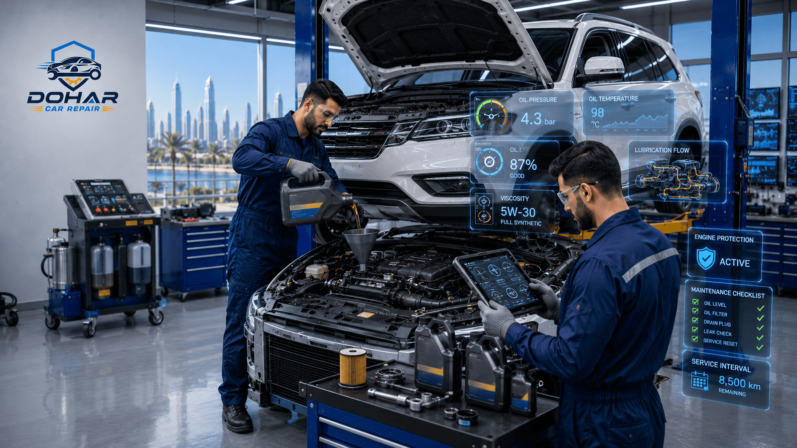

Introduction
If you are searching for a reliable Oil Change Doha service, you already understand something most drivers learn the hard way: engine oil is not optional maintenance in Qatar — it is protection against one of the harshest driving climates in the world. From morning traffic on Salwa Road to afternoon heat soaking parked cars in West Bay and The Pearl, your engine works harder here than in cooler countries. Fresh oil and a clean filter keep friction low, temperatures stable, and expensive engine damage at bay. At Dohar Car Repair, we provide professional engine oil and filter service for every make and model, using the correct viscosity for Qatar heat and a full multi-point check so you leave confident, not guessing.
This complete guide explains why oil changes matter more in Doha, what causes oil to break down faster locally, the warning signs you should never ignore, how a proper full service oil change is performed, how to choose synthetic oil Qatar drivers actually need, what oil change costs look like in QAR, and why thousands of Qatar motorists trust our workshop. Whether you drive a daily Toyota or Lexus, a German sedan, or an SUV for desert weekends, the principles below will help you protect your engine for years.

Why Regular Oil Changes Matter in Qatar
Engine oil lubricates moving parts, carries away heat, suspends dirt and metal particles, and protects seals from drying out. In mild climates, manufacturers often stretch intervals to 10,000–15,000 km on high-quality synthetic oil. In Qatar, that same schedule can be optimistic. Ambient temperatures frequently exceed 40°C for months, under-bonnet temperatures climb higher still, and short urban trips never allow oil to stabilize at optimal temperature for long enough to burn off moisture and fuel dilution cleanly.
Skipping or delaying an oil change in Doha is one of the fastest ways to invite sludge, increased wear on camshafts and bearings, sticky hydraulic lifters, and — in severe cases — catastrophic engine failure. Related problems often show up alongside neglected oil care: rising oil consumption, rough idle, and the kind of engine noise that later leads to costly engine repair in Doha. Regular oil service is simply the cheapest insurance you can buy for your car.
- Heat protection: Fresh oil with the right additives resists thinning and oxidation under Qatar summer loads
- Cleaner internals: Detergent packages keep varnish and sludge from coating oil passages
- Better fuel economy: Correct viscosity reduces parasitic drag compared with aged, thickened oil
- Longer engine life: Consistent oil change Doha intervals dramatically cut wear rates
- Warranty compliance: Most manufacturers require documented oil and filter service at approved intervals
Qatar Heat Reality
When outside air is 45°C and you sit in stop-go traffic with AC on full, engine oil can see sustained high temperatures that accelerate oxidation. In Qatar, many workshops — including ours — recommend shorter intervals than the absolute maximum printed in European or North American manuals.
Common Causes of Engine Oil Degradation in Doha
Understanding what ruins oil helps you plan smarter maintenance. These are the stresses we see every week at our Doha workshop:
Extreme Ambient and Engine Heat
Heat oxidizes oil molecules, darkens the fluid, and reduces its ability to cling to metal surfaces. Additives that fight foam, wear, and acid formation deplete faster. Cars that idle with AC on while waiting outside malls or school gates expose oil to long, hot dwell periods without the cooling airflow of highway speeds.
Fine Dust and Sand
Qatar’s airborne dust loads the air filter and, over time, can migrate past seals into the lubrication system. Contaminated oil becomes abrasive. That is why pairing oil service with filter inspection — and air filter checks — is part of smart car maintenance Doha drivers should follow year-round.
Short Trips and Congestion
Frequent cold-ish starts (relative to fully warm cruise temperature), followed by short hops across neighbourhoods, leave unburned fuel and moisture in the oil sump. Over weeks, that dilutes oil and increases acidity. Doha’s roundabout-heavy layout and dense areas like Najma, Al Sadd, and Old Airport make short-trip patterns very common.
Extended Oil Intervals and Wrong Viscosity
Using a thick winter-oriented viscosity when the car specifications and climate call for a heat-stable grade, or stretching changes “because the oil still looks okay,” are frequent mistakes. Colour alone is a poor judge of quality — oil can be heavily degraded while still looking somewhat amber.
Neglected Oil Filter Doha Service
An oil filter traps sludge and metallic wear particles. Reusing an old filter at oil change time forces dirty oil back into the engine through a bypass path once the filter media clogs. Every professional oil filter Doha replacement should happen with every oil change — no exceptions at Dohar Car Repair.

Warning Signs You Need an Oil Change
Do not wait for a service light if your car is due by kilometres or months. Watch for these practical signals that your engine is asking for fresh oil:
- Dashboard oil light or service reminder: Never ignore pressure or oil-change indicators — pull over if pressure is low
- Dark, gritty dipstick oil: Oil that smells burnt or feels gritty between fingers is overdue
- Louder engine or ticking on cold start: Thin or depleted oil cannot cushion valvetrain noise as well
- Exhaust smoke or rising oil use: Often linked to worn oil, clogged breathers, or broader engine issues
- Reduced performance or economy: Thickened oil increases internal drag
- Oil smell in cabin: May indicate leak or overheating oil; inspect promptly
- Mileage or time interval reached: In Qatar heat, many drivers benefit from 5,000–8,000 km or 6-month cycles depending on oil type and driving style
If noises continue after a fresh change, schedule a diagnostic visit. Oil service is preventive; deeper knocking or smoke may need full car repair service in Doha beyond lubrication alone.
Professional Oil Change Process
A proper full service oil change is more than draining and pouring. Here is the process our technicians follow so every Oil Change Doha appointment protects your engine correctly:
-
Vehicle check-in and history review
We confirm make, model, engine code, manufacturer oil specification (API/ACEA/ILSAC and OEM approvals), and your typical driving pattern — highway, city, or mixed Qatar use.
-
Warm-up and under-vehicle inspection
Oil drains more completely when warm. We also look for leaks at the sump gasket, oil cooler lines, and filter housing before service begins.
-
Safe drain of used oil
Old oil is drained completely into approved containers for responsible disposal. Leaving residual sludge behind defeats the point of the service.
-
Oil filter Doha replacement
We fit a quality oil filter matched to your vehicle, lubricate the gasket, and torque to specification so you do not face leaks after leaving the workshop.
-
Fresh oil fill with correct viscosity
We refill with the right engine oil viscosity Qatar conditions demand for your engine — often 0W-40, 5W-40, or manufacturer-specified synthetics for modern turbo engines.
-
Level verification, idle check, and road-ready confirmation
Dipstick and electronic level sensors (where fitted) are verified. We check for leaks, reset service indicators when applicable, and review any findings with you before handover.
"In Qatar, the oil change is never just a pour-and-go job. We match viscosity to heat, always replace the filter, and inspect for early engine wear so small problems do not become big invoices."
Choosing the Right Engine Oil for Qatar Heat
Viscosity grades tell you how oil flows when cold and how thick it stays when hot. The first number (with W) relates to cold flow; the second number is high-temperature thickness. For engine oil viscosity Qatar shopping, heat stability and shear resistance matter more than brand marketing slogans.
Mineral, Semi-Synthetic, and Full Synthetic
Synthetic oil Qatar options — especially full synthetic — resist oxidation and viscosity breakdown far better than basic mineral oil under prolonged high temperatures. Many newer turbocharged and direct-injection engines specifically require full synthetic formulations with low-ash chemistry. Semi-synthetics can suit older engines on tighter budgets, but for summer traffic in Doha, full synthetic is usually the wiser investment.
What We Recommend Looking For
- Exact viscosity from your owner’s manual (do not “go thicker” without technician advice)
- API SP / SN Plus or current equivalent approvals for gasoline engines
- OEM approvals (e.g., VW, MB, BMW, Toyota) when listed
- Proven high-temperature stability for Gulf climates
- Trusted brands with batch authenticity — counterfeit oil is a real regional risk
If you are unsure whether your car needs a routine change or is showing signs of deeper mechanical trouble, our team can advise during the same visit. We also handle complementary services such as brake repair in Doha and car AC repair when seasonal service packs make sense for busy drivers.
Synthetic Oil Tip
Full synthetic oil change intervals can be longer than mineral oil — but Qatar heat, dust, and short trips still justify conservative schedules. Ask us for a custom kilometre/month plan based on your exact vehicle and how you drive.
Maintenance Tips Between Oil Changes
Extend oil life and catch problems early with these habits between shop visits:
- Check the dipstick monthly: Top up with the same grade if low; investigate sudden drops
- Keep the air filter clean: Dusty Qatar air starves performance and can contaminate the system
- Avoid extreme redline habits when cold: Give oil a minute to circulate after start
- Park with shade when possible: Lower soak temperatures mean kinder under-bonnet heat soak
- Watch for leaks on the driveway: Spotting early drips saves engines
- Do not mix random oil brands casually: Top-ups should match viscosity and quality level
- Schedule before long desert trips: Fresh oil and coolant checks before highway or inland drives
Pair oil care with overall vehicle health. Learn more about our workshop standards on the about us page, and browse more guides on our blog.
Common Mistakes Drivers Make
These errors cost Qatar drivers more money than a timely oil change ever would:
- Skipping the oil filter: Fresh oil through a clogged filter is a false economy
- Overfilling the sump: Too much oil can cause foaming, seal stress, and catalytic converter damage
- Using the cheapest generic oil: Wrong specs risk timing chain wear and turbo coking
- Judging oil only by colour: Modern synthetics darken while still within usable additive life — or look “ok” while overdue
- Resetting the light without changing oil: Hides the problem instead of solving it
- Ignoring turbo-specific requirements: Forced-induction engines need correct high-quality synthetics
- DIY without proper disposal or torque: Cross-threaded drain plugs and filter housings are common DIY failures we later repair

Oil Change Cost in Qatar (QAR)
Prices vary by engine size, oil type (mineral, semi-synthetic, full synthetic), filter design (cartridge vs spin-on), and whether you add extras such as oil flush or cabin/air filter replacement. Typical Doha market ranges for a standard passenger car:
- Conventional / mineral oil change: 80–150 QAR
- Semi-synthetic oil change: 120–220 QAR
- Full synthetic oil change: 180–450 QAR (higher for large engines / premium OEM oils)
- Oil filter alone (if separate): 25–80 QAR depending on model
- Full service oil change package (oil, filter, basic inspection): often 200–500 QAR
- Luxury / performance / large SUV synthetics: 400–800+ QAR
We quote clearly before work starts. If your engine is already damaged, oil service alone will not fix internal wear — in those cases we discuss transparent repair options, and if the car is uneconomical to repair, some owners explore selling an accident or damaged car in Qatar through our related services.
Value Over Cheap Fills
The lowest advertised oil change is not always the best deal if it uses incorrect oil or skips the filter. Ask what brand, viscosity, and filter are included — then compare properly.
Benefits of Professional Oil Service
Choosing a workshop that treats oil change as skilled maintenance — not a rush job — delivers measurable benefits:
- Correct specification every time: No guesswork on approvals or viscosity
- Proper torque and leak prevention: Drain plugs and filters installed correctly
- Early fault detection: Techs spot coolant mixing, metal glitter, or gasket seepage
- Authentic products: Reduced risk of counterfeit lubricants
- Service record support: Documentation that helps with warranty and resale
- Time savings: Fast, booked appointments so you are not left waiting without answers
Why Choose Dohar Car Repair
Drivers across Doha choose Dohar Car Repair for oil service because we combine technical care with honest communication:
- 15+ years of local experience understanding Qatar heat, dust, and driving patterns
- All makes and models — Japanese, Korean, European, American, and Gulf-spec vehicles
- Quality oils and filters suited to Gulf climate and manufacturer requirements
- Transparent pricing in QAR before we start — no surprise extras
- Inspection mindset so you hear about small issues while they are still cheap to fix
- Convenient contact via phone, WhatsApp, or our contact page
- Full workshop capability if oil service reveals needs for engine, brake, or AC work
Our location serves customers from central Doha and surrounding areas who want dependable turnaround without dealership mark-ups for routine lubrication service.
FAQ
How often should I get an oil change in Doha?
Follow your manufacturer’s interval as a baseline, then adjust for Qatar conditions. Many drivers on semi-synthetic oil do well around 5,000–7,000 km; full synthetic may allow longer stretches if you mostly highway-drive and use quality filters. City traffic, taxis, and dusty conditions usually need the shorter end of the range. When unsure, ask us to recommend a schedule after inspecting your current oil condition.
Is synthetic oil worth it in Qatar?
Yes for most modern engines — and especially for turbocharged cars. Synthetic oil Qatar summers reward you with better heat resistance, cleaner internals, and more stable viscosity. The small premium over mineral oil is minor compared with the cost of an engine overhaul caused by neglected lubrication.
Do I need to replace the oil filter every time?
Absolutely. A professional oil filter Doha service always replaces the filter with the oil. Reusing a clogged filter forces contaminants back into circulation and shortens the life of your new oil.
Can I switch from mineral to full synthetic oil?
In most engines in good condition, yes — after confirming the viscosity and approvals match the manual. Very high-mileage engines with heavy sludge may need inspection first. Our technicians advise case by case during your visit.
How long does an oil change take at Dohar Car Repair?
A standard full service oil change is often completed within about 30–60 minutes depending on access, filter type, and whether additional inspections or filter replacements are requested. Book ahead for the fastest slot.
What if my oil light comes on while driving?
If it is a red oil pressure warning, reduce load, pull over safely as soon as possible, and check the level. Do not keep driving with low oil pressure — engines can seize quickly in heat. Call or WhatsApp us for guidance and recovery options if needed.
Conclusion
A disciplined Oil Change Doha routine is one of the highest-return habits for any car owner in Qatar. Heat, dust, and congested roads accelerate oil aging; fresh lubricant and a new filter restore protection your engine needs every day. From choosing the right synthetic grade to verifying levels and spotting early leaks, professional service removes guesswork and protects your investment.
Ready to book? Contact Dohar Car Repair for a fast, professional oil and filter service. Call 0097472223959, message us on WhatsApp, or visit our contact page to schedule your appointment. Drive cooler, cleaner, and safer — start with the oil change your engine has been waiting for.